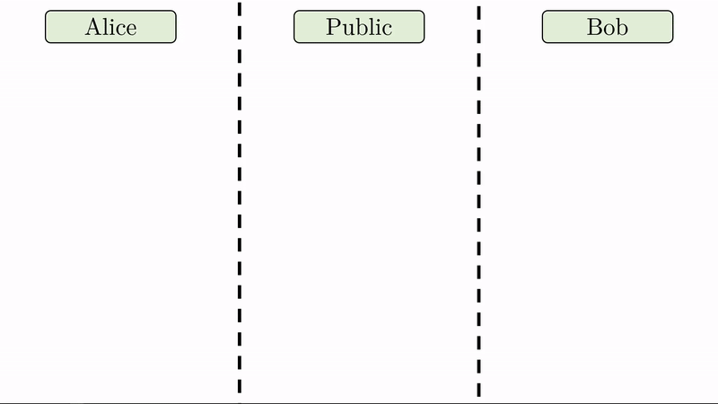
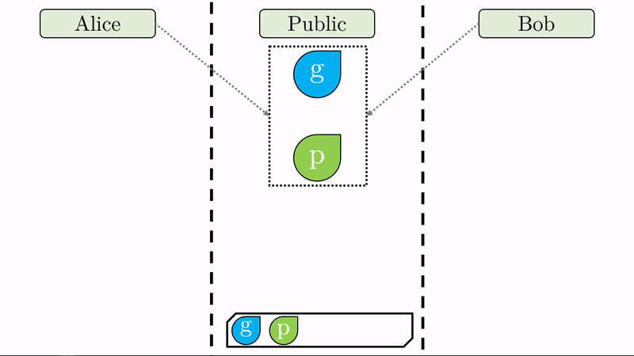
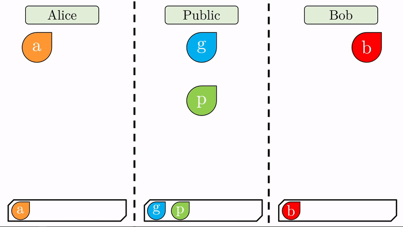
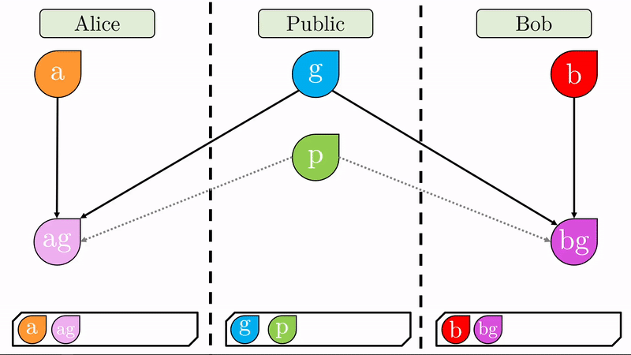
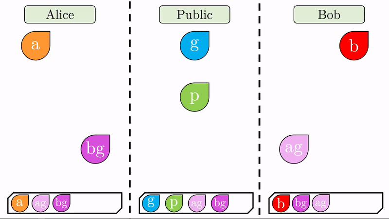
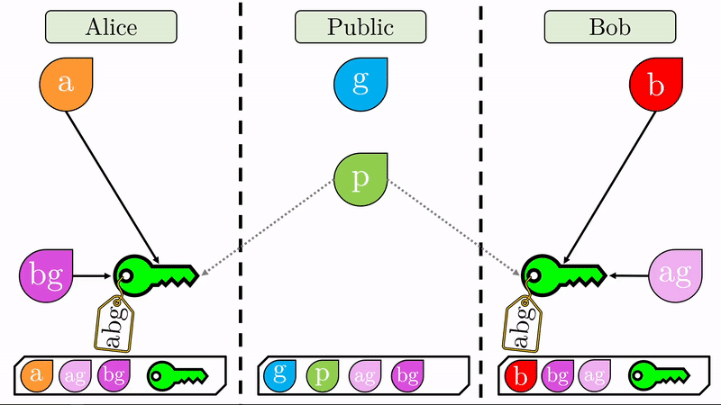

Diffie - Hellman: Ilustración¶
Motivación¶
Con el advenimiento de la criptografía de llave pública, resultaba imperativo el desarrollo de un sistema robusto para establecer un canal de comunicación seguro. Procedimientos anteriores bajo la premisa de llaves privadas requerían convenir un intercambio presencial o vulnerable y expuesto de llaves para encriptar y desencriptar el contenido de los mensajes del canal establecido. Los primeros sistemas de criptografía de llave pública como el knapsack contemplan un procedimiento de generación de llaves que en su momento parecía robusto pero que, según el trabajo de los creadores del RSA, es susceptible a ataques altamente eficientes que permiten calcular las claves privadas en tiempo polinomial.
El knapsack, como sistema de encriptación, presenta procedimientos para cada etapa y ciclo de un canal de comunicación. Una vez establecidas las claves, puede establecerse la comunicación encriptando mensajes, liberándolos y desencriptándolos en su destino. Aunque existen posibles vulnerabilidades en cada etapa, nosotros nos enfocaremos por ahora en el procedimiento para la generación e intercambio de claves, Diffie-Hellman. Sistemas robustos de encriptación como el RSA apalancan su funcionamiento desde el procedimiento descrito a continuación.
Primeros conceptos¶
Seguiremos el ejemplo clásico de Alice y Bob. Estos dos personajes deben compartir mensajes el uno con el otro de forma secreta, es decir, sin que algún tercero pueda conocer e interpretar el contenido de los mensajes aún si sabe que existe el canal de comunicación. Como antes mencionado, el procedimiento Diffie Helman permite generar llaves con las cuales encriptar o desencriptar mensajes. Por lo pronto estudiaremos el proceso para alcanzar este secreto compartido.
Idea general¶
La comunicación en secreto, según su descripción inicial, puede describirse por la siguiente secuencia de pasos (Suponga un escenario donde Alice quiere enviar un mensaje a Bob):
Alice tiene un mensaje que quiere enviar a Bob.
Independiente de como convinieron un secreto compartido, Alice utiliza el secreto para encriptar el mensaje.
Alice publica su cifrado en la red con Bob como destinatario (Aunque cualquiera podría interceptarlo).
Bob utiliza el mismo secreto compartido para desencriptar el cifrado y leerlo.
Estos pasos describen la comunicación entre dos partes simétrica. Veamos ahora su contraparte asimétrica.
Alice tiene un mensaje que quiere enviar a Bob.
Alice conoce la llave pública (accesible por todo interesado) de Bob y encripta su mensaje con la llave.
El cifrado solo puede desencriptarse con la llave privada de Bob. Las claves existen en pares, siendo la versión pública del destinatario la que se usa para encriptar el mensaje y la privada para desencriptarlo.
Alice publica su cifrado en la red con Bob como destinatario (Aunque cualquiera podría interceptarlo).
Bob, como único conocedor de su llave privada, desencripta y lee el mensaje original de Alice.
Este procedimiento es susceptible a vulnerabilidades que estudiaremos con más detalle pronto. Note que hasta ahora Alice y Bob no comparten información más allá del mensaje encriptado y la clave para encriptar. El valor de este procedimiento está en que idealmente la clave privada es desconocida por todos menos por el destinatario. En teoría, siempre podría establecerse un canal de comunicación por encriptación asimétrica. En práctica, para que el cifrado con una llave pública sea seguro debe hacerse con claves que exigen un alto costo computacional. En su lugar, sería preferible establecer un canal de comunicación por encriptación simétrica. Tenemos entonces el siguiente escenario.
Alice y Bob pertenecen a una red pública y quieren comunicarse de manera privada. Pueden establecer cada vez su canal por encriptación asimétrica, pero esto es altamente ineficiente. Pueden también establecer un canal de comunicación simétrico, pero para este deben ya compartir una clave con la que encriptar y desencriptar mensajes y convenir una en una red pública es altamente riesgoso. Un escenario ideal sería en el que Alice y Bob pudieran convenir una clave o secreto compartido sin que los otros miembros de la red se enteren para poder comunicarse con encriptación simétrica.
Compromiso¶
En 1976 Whitfield Diffie y Martin Hellman publicaron un método que permite establecer un secreto compartido entre dos partes para habilitar un canal de comunicación eficiente. El objetivo es generar una llave privada conocida por ambas partes de forma que puedan de forma eficiente encriptar y desencriptar de forma simétrica la información que se comparten. Las ineficiencias de la criptografía asimétrica son evidentes si el objetivo es compartir muchos mensajes extensos, pero para un paso sencillo, como compartir una llave de encriptación simétrica, resulta atractiva la comunicación asimétrica.
En términos generales, el protocolo de intercambio de llaves Diffie-Hellman establece una instancia de un canal de comunicación asimétrica para compartir información entre dos partes en una única ocasión para esa sesión (Luego veremos que restringir una sesión a un único mensaje puede ser atractivo). En esta instancia, las partes generan una llave simétrica a partir de sus claves privadas y públicas, conocida solo por ellos, para luego establecer un canal de comunicación simétrico, descifrable solo por los dos con una misma llave compartida.
Protocolo¶
Veamos de forma ilustrativa el protocolo en acción. Entraremos en detalle de los aspectos matemáticos en la siguiente página. Se dijo con anterioridad, que el algoritmo Diffie-Hellman inicia una instancia de comunicación asimétrica, pero esta es distinta a lo que ya describimos.
Note en la animación que a cada parte le corresponde un espacio privado (seguro para los secretos) y comparten un espacio público disponible para ellos y cualquier tercero.
En lugar de Alice y Bob definir una llave pública y una llave privada respectivamente, solo nos interesa que definan su llave privada (\(a\) y \(b\)) y que acuerden entre sí, expuestos al público, dos valores \(g\) y \(p\).

Note que al pie de cada región llevamos un registro de las variables a las que han tenido acceso sus respectivos usuarios.

Con sus respectivas claves privadas, Alice y Bob computan un valor combinado con el generador \(g\) (recuerde que \(g\) es público). Este proceso de ‘mezclar’ los valores tiene un sentido matemático específico que impide que se pueda deshacer la operación (No es imposible pero sí en exceso dificil y costoso). Respectivamente, Alice y Bob produjeron los valores \(ag\) y \(bg\) de los cuales no se pueden inferir las claves privadas \(a\) y \(b\). Sin \(p\), esta operación es imposible.

Una vez generados estos cifrados, Alice y Bob los intercambian. Note que como aún no hay un canal seguro de comunicación, \(ag\) y \(bg\) son públicos.

Nuevamente realizamos la operación de ‘mezclado’. Alice mezclará el cifrado público que acaba de recibir de Bob con su clave privada (\(bg\) con \(a\), produce \(abg\)). Bob, hará lo mismo con su clave privada y el cifrado público que recibió de Alice (\(ag\) on \(b\), produce \(abg\)).

Note que ahora Alice y Bob comparten un cifrado irreversible (idéntico para ambos) el cual pueden utilizar para encriptar cualquier mensaje consecuente. Alice y Bob pueden ahora establecer un canal de comunicación seguro, con encriptación simétrica.
Veamos ahora, que únicamente Alice y Bob pueden generar la llave simétrica \(abg\). El público tiene acceso al generador \(g\), el valor \(p\) y las llaves cifradas \(ag\) y \(bg\). No hay forma de ‘mezclar’ estos valores de forma tal que generen \(abg\). Intentar ‘mezclar’ \(bg\) con \(ag\) produciría algo como \(abgg\), lo cual es un valor completamente distinto y que no sirve para descifrar los mensajes entre Alice y Bob. ¡Hemos establecido un canal seguro de encriptación simétrica!

Vulnerabilidades¶
El procedimiento parece robusto, pero su intención es solo escudar a 2 partidos de un ojo fisgón. ¿Qué pasa cuando introducimos a una tercera parte, Mallory, que tiene el poder de interceptar y manipular mensajes entre partes en la red? Tenemos también la preocupación de que información secreta de alguna de las partes sea liberada al público. ¿Podemos satisfacer que los mensajes previos están seguros?
Ataque de intermediario (Man in the Middle)¶
Suponga un mismo escenario donde Alice y Bob quieren establecer un canal de comunicación de encriptación simétrica, solo que ahora una tercera parte, Mallory, puede intervenir sobre la información que viaja en la red. Por ejemplo, si Alice quisiera mandar su propuesta de un generador \(g\) a Bob, Mallory sabría que esto está sucediendo evitar que esto suceda, o escoger su propio mensaje para enviarle a Bob. Note que hasta ahora, nuestro método de comunicación no tiene forma de validar el origen de un mensaje en la red, por lo que Mallory puede estar seguro de que su intromisión en el canal de Alice y Bob no es detectable (aún).
El concepto de este ataque es bastante sencillo. Todo lo que debe hacer Mallory para poder interpretar todos los futuros mensaje entre Alice y Bob es suplantarlos al momento de generar la llave compartida, de forma que Mallory comparte una llave con Bob y una con Alice.
Alice y Bob acuerdan un \(g\) y \(p\) públicos y generan sus llaves privadas respectivas.
Alice genera \(ag\) y lo publica en la red con la intención de que lo reciba Bob. Bob hace lo mismo para Alice con \(bg\).
Mallory intercepta estos mensajes y evita que lleguen al destinatario correspondiente.
Mallory genera su propia llave privada \(m\) y produce \(mg\).
Mallory responde a Alice con \(mg\) suplantando a Bob. Alice cree que lo que acaba de recibir es \(bg\).
Mallory responde a Bob con \(mg\) suplantando a Alice. Bob cree que lo que acaba de recibir es \(ag\).
Alice y Bob calculan respectivamente \(mag\) y \(mbg\).
Mallory calcula \(mag\) y \(mbg\). Ahora comparte un secreto con el cual establecer un canal encriptado simétrico con ambos Alice y Bob. Estos no se han percatado del ataque.
Cualquier cifrado enviado por Alice con la intensión de que lo reciba únicamente Bob, llega primero a Mallory. Mallory puede decidir hacer lo que quiera con este. Si la intención es solo mediar la comunicación entre Alice y Bob, Mallory debe descifrar el cifrado entrante y encriptarlo con el secreto contrario. Esto le permite editarlo, borrarlo, o incluso compartirlo con otros.
Esta vulnerabilidad fue descubierta pronto, por lo cual se volvió una práctica común agregar un paso de autenticación al cifrado simétrico. Entran ahora en juego las llaves públicas.
Una vez establecido el canal de comunicación entre Alice y Bob, estos se enviarán mensajes entre sí encriptando y descifrando con la clave compartida. Recordemos que al generar una llave privada \(a\) o \(b\), esta puede generarse con una llave complementaria pública. Por este método, un mensaje encriptado con una clave (privada o pública) solo puede descifrarse con su complemento. Si por ejemplo Alice encriptara un mensaje con la llave pública de Bob, solo Bob podría descifrarlo. Si Alice encriptara con su clave privada, todos podrían descifrar el código con su clave pública. Este segundo escenario parece poco sensato, pero tiene un beneficio crucial y es que al descifrar con la llave pública de Alice, el recipiente tiene asegurado que el mensaje fue encriptado por Alice con su llave privada. Planteamos entonces el siguiente protocolo de intercambio de llaves.
Alice y Bob quieren establecer una canal de comunicación encriptado.
Alice encripta su llave a intercambiar con Bob, \(ag\), con su clave privada.
Bob encripta su llave a intercambiar con Alice, \(bg\), con su clave privada.
Alice y Bob intercambian en público sus llaves.
Alice valida que la llave que recibió pertenece a Bob, al descifrarla con la clave pública de Bob.
Bob valida que la llave que recibió pertenece a Alice, al descifrarla con la clave pública de Alice.
El protocolo de Diffie Hellman procede como es usual.
Todos los mensajes consecuentes deben encriptarse con la clave pública del remitente para autenticar su identidad.
Si Mallory hubiera querido intervenir en el intercambio de llaves, su influencia hubiera sido evidente ya que no tiene la llave privada de Alice o de Bob con la cual generar la llave \(mg\) y que los respectivos destinatarios la acepten en su proceso de suplantación.
Forward secrecy (PFS)¶
Forward secrecy es la intención de proteger mensajes pasados en caso de que su cifrado haya sido guardado por terceros y el secreto compartido sea publicado. En este caso, la responsabilidad sobre la liberación de estos mensajes no recae sobre alguna falla de Diffie-Hellman. En un inicio mencionamos la noción de una sesión de comunicación. La idea de tener sesiones cortas sobre las cuales habilitar el canal de comunicación es beneficiosa ya que cada vez que se inicie una sesión, la llave compartida puede generarse desde cero en cada ocasión, de forma que, si se libera la clave, solo los mensajes de esa sesión son vulnerables. En teoría, nada impide que utilicemos una nueva llave para cada mensaje o para cada sub-cadena de 126 bits o menos. Recordemos que comunicarse por encriptación asimétrica es un proceso costoso, por lo que quisiéramos minimizar su uso. Cada vez que intercambiamos claves y generamos un secreto compartido estamos efectuando encriptación asimétrica, ya depende de los dueños del canal establecer la frecuencia con la que se generan estas llaves efímeras.
Conclusiones¶
El procedimiento de intercambio de claves, Diffie-Hellman, es seguro para establecer un canal de comunicación seguro y eficiente, pero no es sin sus fallas. Existen variaciones y complementos a este como el RSA o la encriptación por curva elíptica. La combinación de estos tres métodos son el estándar dorado en tecnología de encriptación y son altamente adaptables a las necesidades del contexto. Sigamos a desarrollar los conceptos matemáticos que permiten este protocolo.